Năm bắt đầu hoạt động

Xử lý nền đất yếu • Cơ khí chế tạo • Thiết bị thi công
Vững nền móng, dựng niềm tin
Công ty TNHH B&T cung cấp giải pháp xử lý nền đất yếu, thi công nền móng, chế tạo cơ khí và cho thuê thiết bị công suất lớn cho các công trình hạ tầng, công nghiệp và dân dụng trên toàn quốc.
- Kinh nghiệm từ năm 2001
- Thiết bị thi công chuyên dụng
- An toàn, chất lượng, đúng tiến độ
Thành lập Công ty TNHH B&T
Vốn điều lệ
Nhân sự, kỹ sư và thợ kỹ thuật
Công trình/dự án tiêu biểu theo hồ sơ năng lực
Dải công suất búa rung chế tạo đến 180kW
Giới thiệu B&T
Đối tác nền móng tin cậy cho công trình hạ tầng và công nghiệp
B&T phát triển từ nền tảng cơ khí chế tạo và kinh nghiệm thi công thực tế. Với đội ngũ kỹ thuật lành nghề, thiết bị chuyên dụng và quy trình kiểm soát chất lượng chặt chẽ, chúng tôi đồng hành cùng chủ đầu tư và nhà thầu trong các dự án nền móng, hạ tầng và công nghiệp.

Uy tín • Chất lượng • An toàn
Làm chủ nền đất, kiến tạo tương lai
Lĩnh vực hoạt động
Từ xử lý nền đất yếu đến thiết bị thi công đồng bộ
Từ khảo sát giải pháp đến tổ chức thi công, B&T cung cấp các nhóm dịch vụ nền móng, cơ khí và thiết bị phục vụ công trình.

01
Xử lý nền đất yếu
Thi công bấc thấm, giếng cát, cọc cát, cọc đá và các giải pháp gia cố nền phù hợp điều kiện địa chất từng dự án.
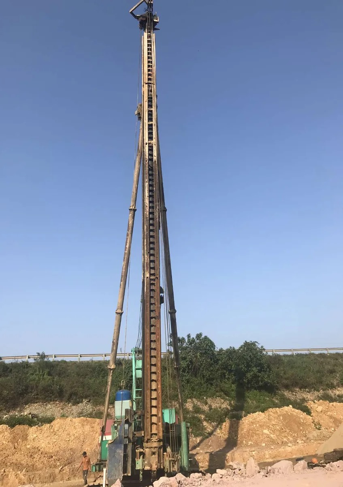
02
Thi công cọc và nền móng
Thi công cọc khoan nhồi, cọc bê tông, cọc cừ ván bê tông, cọc xi măng đất và các hạng mục nền móng công trình.
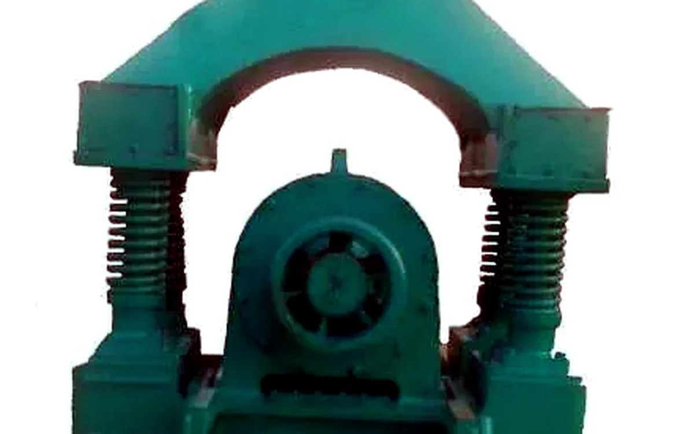
03
Cơ khí chế tạo
Chế tạo búa rung, phụ kiện giao thông, khuôn, hệ bánh răng, chi tiết cơ khí và thiết bị chuyên dụng theo yêu cầu.

04
Cho thuê thiết bị thi công
Cung cấp máy cẩu, máy phát điện, búa rung, máy xúc, máy xúc lật, máy ủi và thiết bị công suất lớn cho công trường.
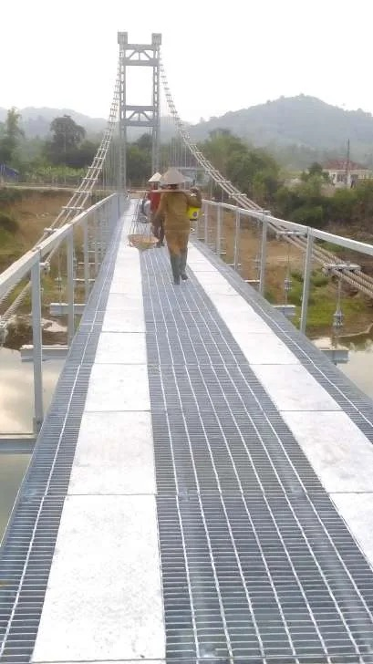
05
Cầu treo và công trình giao thông
Thi công, lắp đặt cầu treo dân sinh và tham gia các hạng mục hạ tầng giao thông.

06
Xây dựng công nghiệp
Tham gia thi công các hạng mục công trình công nghiệp, nhà máy, trạm, bến cảng và hạ tầng kỹ thuật.
Dự án tiêu biểu
Mỗi dự án là một dấu mốc về năng lực thi công
B&T đã tham gia nhiều công trình hạ tầng, giao thông, công nghiệp và xử lý nền đất yếu trên cả nước.
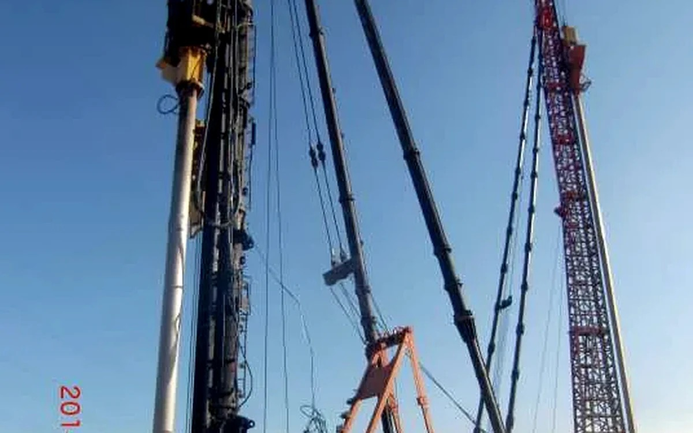
2011 - 2013
Hạ tầng giao thông
Dự án xây dựng Quốc lộ 3 mới
Thi công cọc cát, cọc bấc thấm, xử lý nền đất yếu.
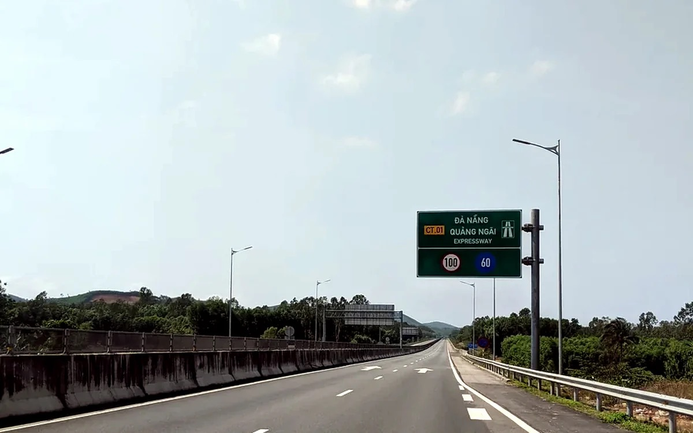
2014 - 2016
Miền Trung
Đường cao tốc Đà Nẵng - Quảng Ngãi
Thi công cọc cát D400, cọc cát nén khí.
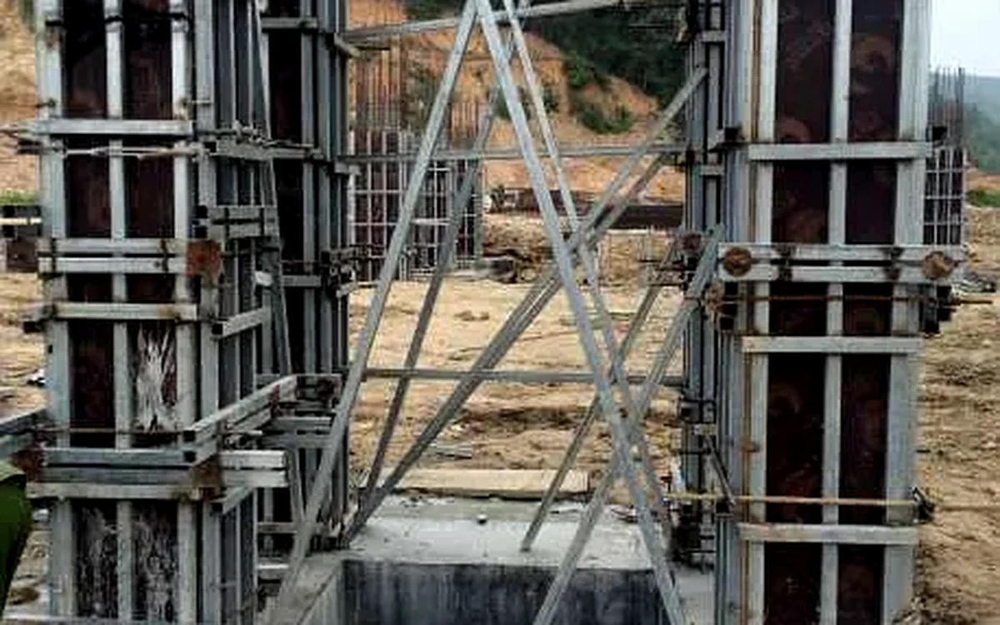
2014 - 2020
Hải Dương
Nhà máy Nhiệt điện Hải Dương
Cọc khoan nhồi, cọc đá dăm, cọc xi măng đất, hạng mục trụ băng tải.
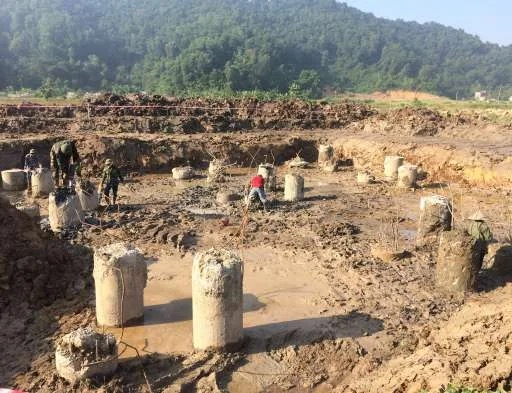
2014 - 2015
Quảng Ninh
Nhà máy Nhiệt điện Thăng Long
Đóng cọc PHC, cọc đá dăm cho hạng mục nền móng công nghiệp.

2017 - 2021
Hà Nội
Trạm bơm tiêu nước Yên Nghĩa
Thi công cọc SW500, SW600, SW840 cho công trình thủy lợi hạ tầng.
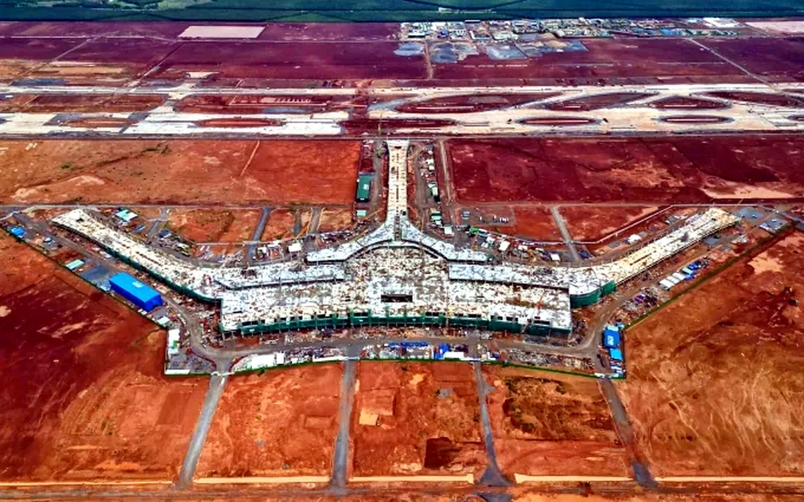
2021
Thừa Thiên Huế
Sân bay Phú Bài
Thi công cọc cát D400 cho hạng mục xử lý nền đất yếu.

2021
Bắc - Nam
Mai Sơn - Quốc lộ 45, cao tốc Bắc - Nam
Thi công cọc cát D400 cho tuyến cao tốc trọng điểm.
Thiết bị và cơ khí
Thiết bị chủ lực và năng lực cơ khí
Nền tảng cơ khí chế tạo giúp B&T chủ động thiết bị, tối ưu giải pháp thi công và đáp ứng yêu cầu tiến độ trên công trường.
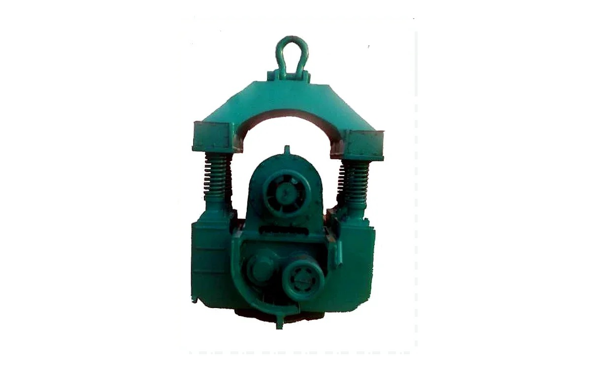
Cơ khí chế tạo
Búa rung 30kW - 180kW
Chế tạo, sửa chữa và vận hành búa rung phục vụ đóng, nhổ cọc cừ, hạ ống vách và thi công nền móng.
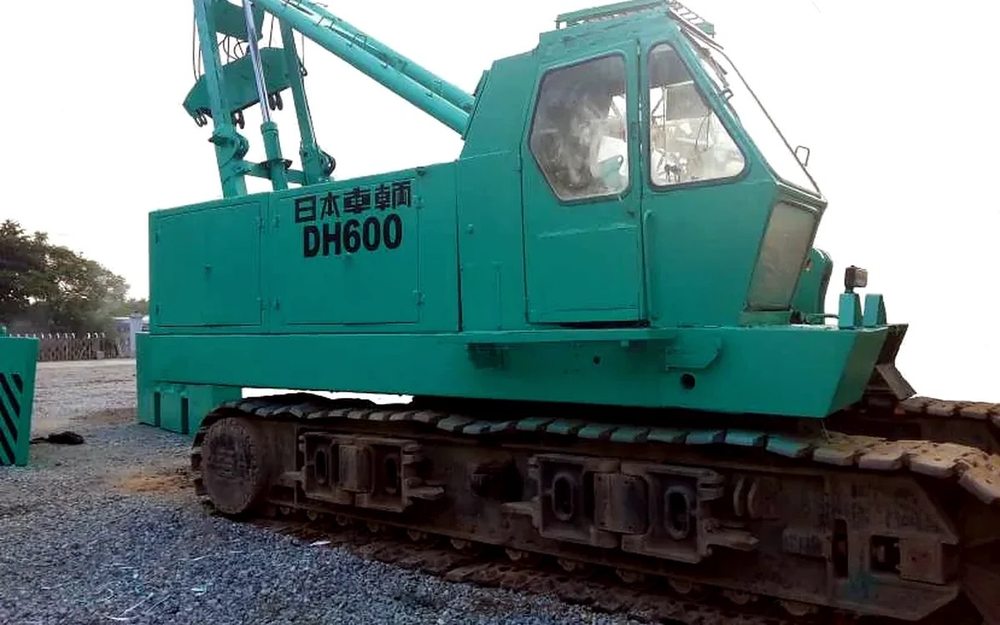
Thi công nền móng
Cẩu bánh xích
Nâng hạ thiết bị, dựng cọc, treo búa rung và phục vụ các dây chuyền thi công tại công trường.
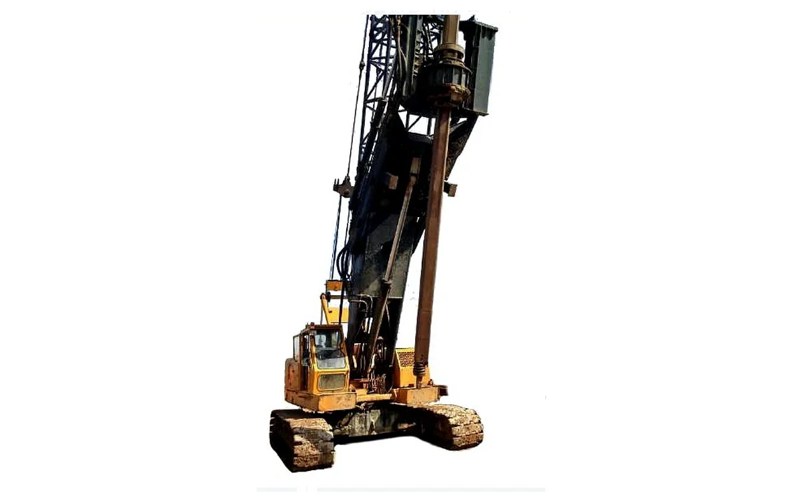
Thi công nền móng
Máy ép cọc
Phù hợp các hạng mục cần kiểm soát lực ép, tiếng ồn và rung chấn trong khu vực thi công.
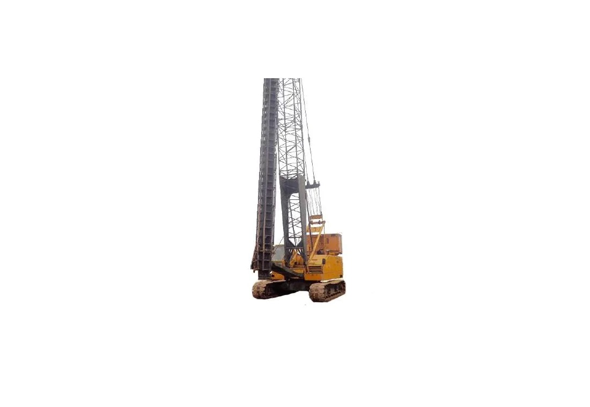
Thi công nền móng
Máy khoan cọc nhồi
Phục vụ hạng mục cọc khoan nhồi, hạ ống vách và thi công nền móng công trình tải trọng lớn.
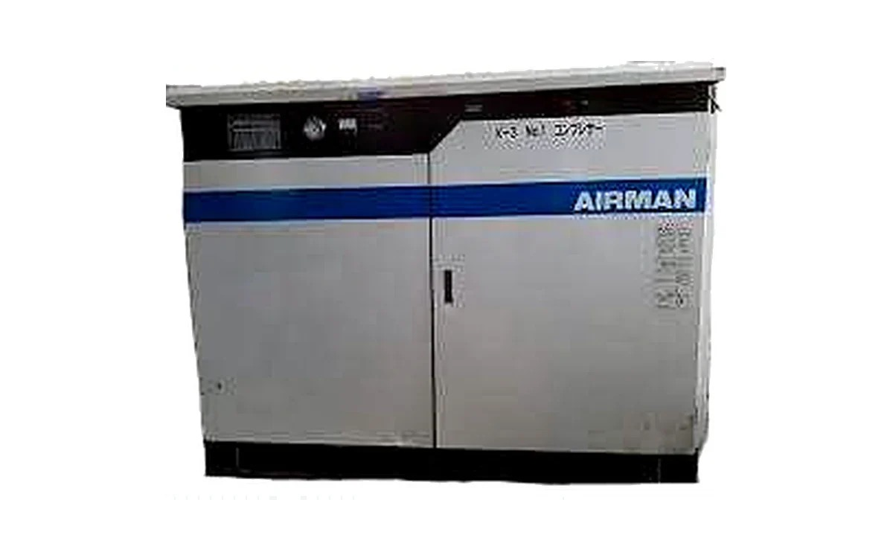
Cho thuê thiết bị
Máy nén khí
Cung cấp nguồn khí ổn định cho dây chuyền cọc cát nén khí và các thiết bị phụ trợ công trường.
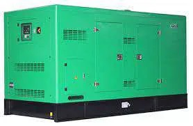
Cho thuê thiết bị
Máy xúc, máy ủi, máy phát điện
Bổ sung năng lực thi công, san lấp mặt bằng và vận hành thiết bị tại các công trình hạ tầng.
Quy trình triển khai
Kiểm soát chất lượng, tiến độ và chi phí từ giai đoạn chuẩn bị
Quy trình rõ ràng giúp kiểm soát chất lượng, tiến độ và chi phí ngay từ giai đoạn chuẩn bị.
Tiếp nhận yêu cầu
Làm rõ quy mô, điều kiện công trình và mục tiêu kỹ thuật.
Khảo sát điều kiện công trình
Đánh giá mặt bằng, địa chất, tải trọng và ràng buộc thi công.
Đề xuất giải pháp kỹ thuật
Lựa chọn biện pháp nền móng phù hợp tiến độ và ngân sách.
Tổ chức thi công
Điều phối nhân sự, thiết bị và kiểm soát chất lượng hiện trường.
Nghiệm thu, bàn giao
Hoàn tất hồ sơ, bàn giao và đồng hành sau thi công.
Cam kết của B&T
Chất lượng, an toàn, tiến độ và hiệu quả kinh tế
Chất lượng
Mỗi công trình hoàn thành là một cam kết về uy tín và năng lực kỹ thuật.
An toàn
Tổ chức thi công theo nguyên tắc an toàn lao động và kiểm soát rủi ro hiện trường.
Tiến độ
Chủ động thiết bị và nhân sự để đáp ứng yêu cầu tiến độ của từng dự án.
Hiệu quả kinh tế
Đề xuất giải pháp phù hợp điều kiện địa chất, tải trọng và ngân sách thực tế.
Đội ngũ kỹ thuật và thi công
Năng lực nhân sự bám sát yêu cầu hiện trường
B&T sở hữu đội ngũ kỹ sư, cán bộ kỹ thuật, thợ lành nghề và chỉ huy công trường có kinh nghiệm trong các dự án hạ tầng, công nghiệp và xử lý nền đất yếu.
Tư vấn giải pháp
Cần giải pháp nền móng an toàn cho dự án của bạn?
Liên hệ B&T để được tư vấn phương án thi công phù hợp với điều kiện địa chất, yêu cầu kỹ thuật, tiến độ và ngân sách thực tế.
Liên hệ